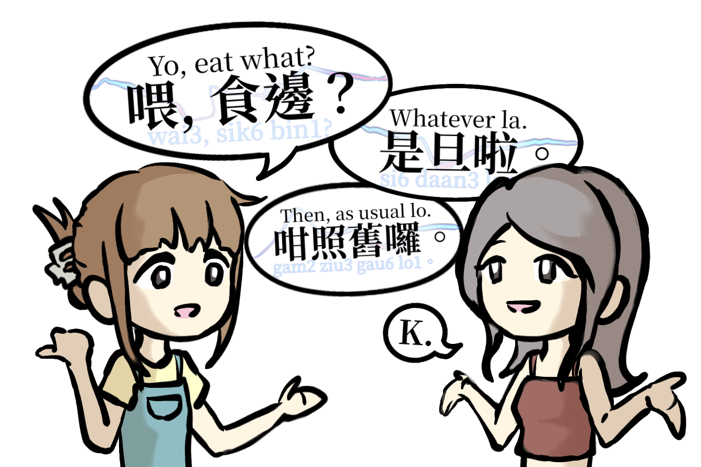

Hong Kong
Community Archive of Favourite Cantonese Expressions
Share Your Voice
Sound Bites, a community based research project at HKBU, explores the expressive soundscape of Cantonese language, and the Hong Kongers' affection for this special language.

Cantonese is the mother tongue spoken in Hong Kong. As one of the most tonally complex languages of the world, it contributes to a quintessential soundscape of Hong Kongers with their jovial expressions and musical tonalities.
As an intimate and profound heritage of human cultures, language is expressive of personalities of a culture, its people, and its history. Sound Bites invites you for a short interview to share your unique perspectives and experiences. Your answers will be collected for research purposes. Additionally, your audios might be showcased in an expressive media output. Please express yourself freely and personally!
Your participation is incredibly valuable to us. We have three interview questions for you. You can answer them by recording audio files using your own device such as a mobile phone. After you are done recording, please send them to us along with your basic information (Name, Age range, Gender, Occupation, and Mother tongue) through Email or WhatsApp.
* We recommend using smart phones or microphones for better audio quality.
Whether it’s a phrase that makes you smile, a saying that holds special meanings, or a fun expression you love, we want to hear it!
You can answer all steps in one.
Please share your thoughts freely. You can consider the uniqueness of Cantonese or how Cantonese is special to you.
Please share your thoughts freely. You can think about a moment or experience that stands out to you!
After having your files on your device, name them using the format:
Send a message to our email address with the following format:
Send to us via WhatsApp with the following format:
For inquiries, please contact us via Email with the subject line "Sound Bites: I want to ask". We welcome any questions and look forward to hearing from you. Thank you for your interest!